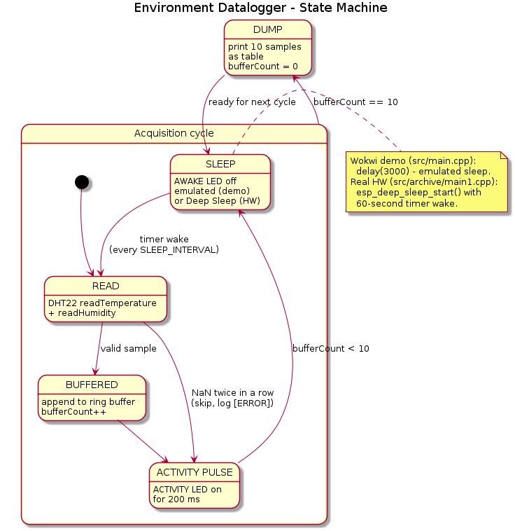
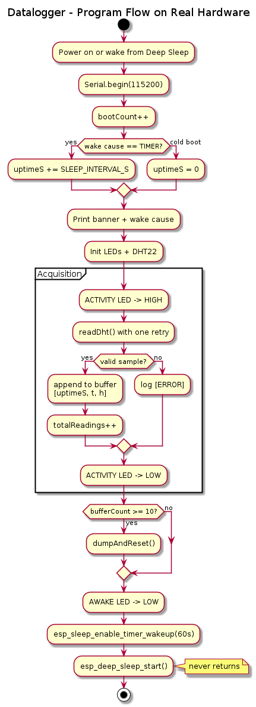
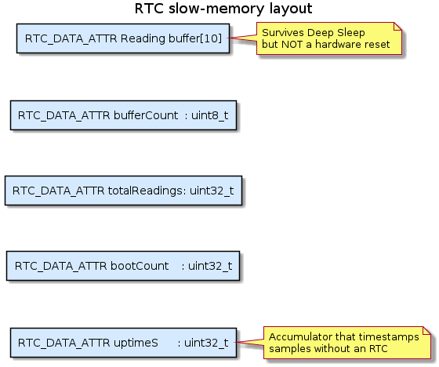

|
ESP32 Environment Datalogger - Sleep Modes 1.0
Periodic-wake datalogger demonstrating power management on ESP32 - RUS Lab 2
|
Periodic-wake environment datalogger implementing Variant 2 of RUS-TVZ Lab 2 ("Upravljanje potrosnjom energije mikrokontrolera" - Power management of microcontrollers). The firmware demonstrates an event-driven control flow where the ESP32 spends almost all of its time in a low-power sleep mode and only wakes periodically to acquire a temperature + humidity sample from a DHT22, buffer it, and dump the last ten samples to the serial port in one block.
The project ships two implementations of the same firmware because the live-demo platform (Wokwi) and the target deployment platform (real ESP32 silicon) impose different constraints.
| File | Sleep mechanism | Storage | Built by default |
|---|---|---|---|
src/main.cpp | Hybrid: 3 s emulated visible sleep (delay) + 1 s real esp_deep_sleep_start() | RTC_DATA_ATTR ring buffer | Yes (Wokwi demo) |
src/archive/main1.cpp | Full-duration real esp_deep_sleep_start() + timer wake (60 s) | RTC_DATA_ATTR ring buffer | No (-e esp32-realhw) |
Both variants actually call the real Deep Sleep API on every cycle. The Wokwi demo just trims that real Deep Sleep to ~1 second per cycle (so the chip resets briefly, instead of for 60 s) and inserts a visible delay() phase before it so the audience sees a clean 3-second sleep window before the reset. The full hardware variant skips the visible phase and stays in real Deep Sleep for the full interval. Behaviourally both variants produce the same DHT22 + 10-sample buffer + dump-and-reset flow; the buffer lives in RTC slow memory in both cases, exactly as on real silicon.
Two independent limitations apply:
esp_light_sleep_start() cannot be called repeatedly from a user task under the Arduino-ESP32 framework, because the framework ships without CONFIG_PM_ENABLE. The SMP-aware sleep-entry path is bypassed, the FreeRTOS idle-task spinlocks on the other core desync, and the second sleep cycle reliably trips an assertion in spinlock_acquire(). There is no application-level fix.esp_deep_sleep_start() does work in Wokwi - it resets the chip on every wake, which is correct Deep Sleep behaviour. The simulator does not model power, so even when the sleep path runs, no actual power saving can be measured.The Wokwi demo variant (src/main.cpp) exercises the real Deep Sleep API on every cycle, but keeps the real-sleep portion short (1 s) and precedes it with a visible 3-second delay() window. The audience sees a clean sleep phase (AWAKE LED off, serial quiet), then a compact [BOOT #n via TIMER] line on each wake instead of the full banner. The full hardware variant (src/archive/main1.cpp) drops the visible window and stays in real Deep Sleep for the entire 60-second interval.
| Requirement (from the spec) | Where it lives |
|---|---|
| Sleep mode (ESP32: Deep Sleep recommended) | esp_deep_sleep_start() in BOTH src/main.cpp and src/archive/main1.cpp |
| Wake source: timer | esp_sleep_enable_timer_wakeup() in both files |
| Simulate environmental readings | DHT22 part in diagram.json, Adafruit DHT library in both files |
| Store last 10 measurements | Ring buffer of size 10 in both files |
| Use RTC memory on ESP32 | RTC_DATA_ATTR qualifiers in both files |
| Print + reset buffer after 10 samples | dumpAndReset() in both files |
| Separate phases: active / sleep / wake | performReading() / emulatedSleep() + Deep Sleep / cold-vs-timer branch |
Do not use only delay() for time control | Real esp_deep_sleep_start() runs every cycle; delay() is the visible cue only |



The lab requirements explicitly require a "Wokwi-simulator limitations" section in the report. The relevant ones for this variant are:
esp_light_sleep_start() from a user task under Arduino-ESP32 asserts on the second cycle. This is a framework limitation, not a Wokwi one - but Wokwi makes it easy to see.src/main.cpp sidesteps this by emulating sleep with delay().temperature / humidity values configured in diagram.json, not real environmental data. The logic of the datalogger (buffering, dumping, timestamping) is fully testable; the content of the readings is not realistic.